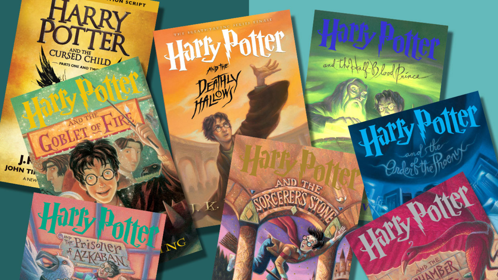

I personally enjoy the Harry Potter books, they are fantastical and suspenseful! When I read them, I feel as if I am experiencing all the things Harry experiences such as riding a broomstick, conjuring a powerful spell, brewing a potion, or fighting the evil Voldemort!

Currently in my school, I am reading Crisping: The Cross of Lead by Avi. It is a suspenseful book that takes place during The Dark Ages specifically during the feudal system about a fourteen year old boy who runs away from his land after being accused of stealing money.